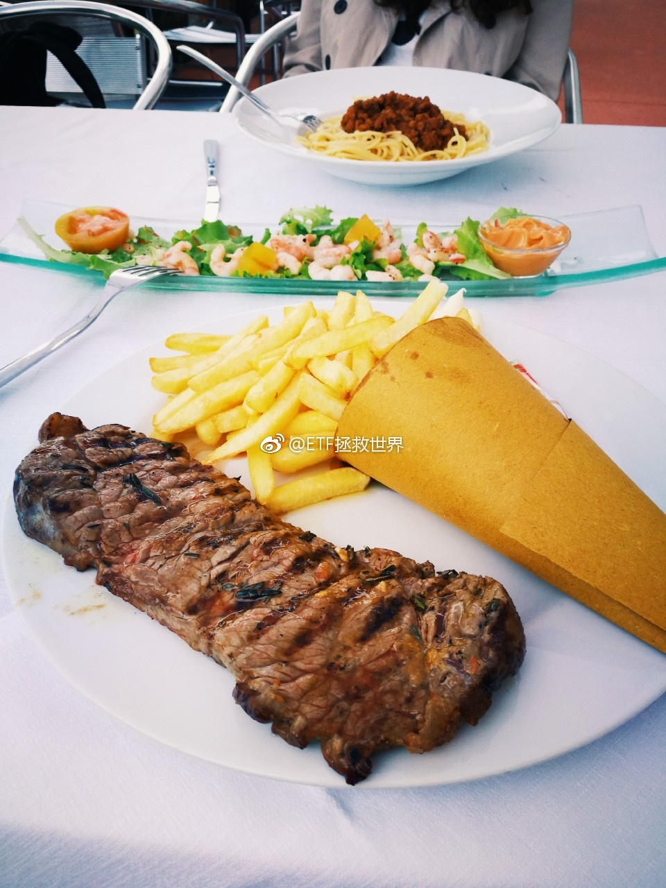
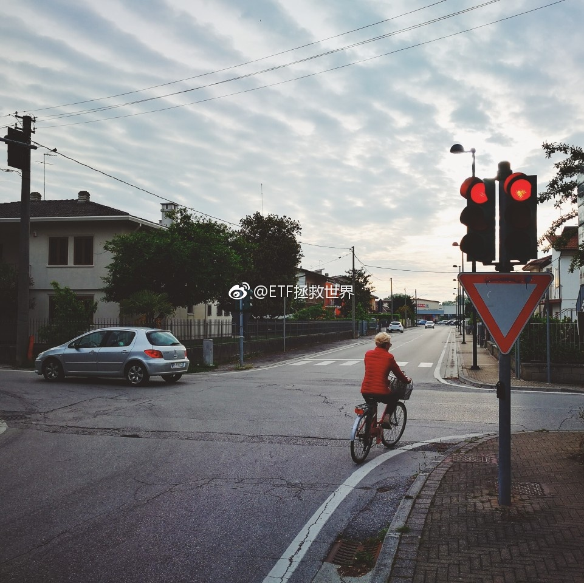

回复@缘如此来:说实话，我感觉大部分人没有北上广深的人有钱。市政设施也比较破旧。不过我看他们过得都挺高兴。//@缘如此来:e大，意大利人民过得是否比我天朝人民幸福@ETF拯救世界:途经意大利小镇，街边吃顿晚餐。八点多太阳才下山。 
我有个总结:比较温和的投资者，不那么极端的投资者，活下去的机会大一点。一个想法，不一定对。//@ETF拯救世界:……从2007年的沙黾农开始，我就有一个坚定的信念：在金融市场上，杀伤力最大的是大v。一次次验证。@ETF拯救世界:深成B会不会跌到1毛。一个问题。